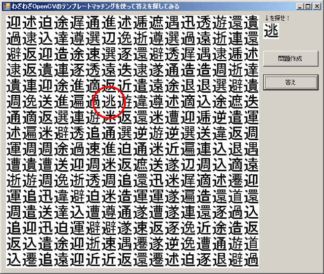

VB(VB2005)によるOpenCV使用のサンプルプログラムの３番目です。
全ソースは下記からダウンロードできます。
OpenCVTemplateMatching.lzh

このサンプルプログラムは、どっかで見たようなゲーム？のような形態をしています。
画面に表示された漢字の中から正解を探すというものです。
「問題作成」ボタンを押せば問題が作成されます。
「答え」ボタンを押せば答えが表示されます。
問題を作るときは、はじめに正解以外の文字をランダムに描画していき最後に正解の文字を描画します。
で、「答え」ボタンが押されたとき、わざわざテンプレートマッチングを用いて正解を求めています。
答えを求めるときの主なコードは下記になります。
（他のサンプルと同様にOpenCVDefine.vbとOpenCVUtility.vbを使用します。
なお、前のサンプルよりこっちのほう機能がアップしてます）
|
Dim pnt As Point pnt = TemplateMatching(qimg, timg) '答えの位置に赤丸描画 Dim g As Graphics = Graphics.FromImage(Pic_Image.Image) Dim pn As New Pen(Color.Red, 4) g.DrawEllipse(pn, pnt.X - CHARSIZE \ 2, pnt.Y - CHARSIZE \ 2, CHARSIZE * 2, CHARSIZE * 2) g.Dispose() pn.Dispose() Pic_Image.Refresh() End Sub '---------------------------------------------------------- '検索 Private Function TemplateMatching(ByVal Img As IplImageWrapper, ByVal Template As IplImageWrapper) As Point 'グレイスケールイメージ取得 Dim imggry As IntPtr = cvCreateImage(Img.CvSize, IPL_DEPTH_8U, 1) cvCvtColor(Img.Ptr, imggry, CV_BGR2GRAY) Dim tmpgry As IntPtr = cvCreateImage(Template.CvSize, IPL_DEPTH_8U, 1) cvCvtColor(Template.Ptr, tmpgry, CV_BGR2GRAY) 'テンプレートマッチングの結果を格納する領域を作成 Dim sz As New CvSize(Img.Size.Width - Template.Size.Width + 1, Img.Size.Height - Template.Size.Height + 1) Dim result As IntPtr = cvCreateImage(sz, IPL_DEPTH_32F, 1) 'テンプレートマッチング実行 cvMatchTemplate(imggry, tmpgry, result, CV_TM_SQDIFF) 'cvMatchTemplate(Img.Ptr, Template.Ptr, result, CV_TM_SQDIFF) '最も一致する位置を取得 Dim min_val, max_val As Double Dim min_loc, max_loc As CvPoint cvMinMaxLoc(result, min_val, max_val, min_loc, max_loc, IntPtr.Zero) Return New Point(min_loc.x, min_loc.y) End Function |
流れは下記になります。
①問題画像と答え画像(テンプレート)を元にそれぞれイメージ(IplImage)を作成します。
この辺はラッパクラス内でBitmapをからビットマップデータをIplImageに転送しています。
②それぞれのイメージをグレイスケール化します。（実はグレイスケール化する必要はないと思う）
③cvMatchTemplateの結果を格納するIPL_DEPTH_32Fタイプのイメージを作成します。
この結果は表示する必要がない(っていうかそのままでは表示できない)ので
IplImageWrapperを使いません。
④cvMatchTemplateを呼び出し、テンプレートマッチングを行います。
⑤cvMinMaxLocにて最も一致する箇所を求めます。
⑥最も一致する位置を「回答」として、その位置に赤丸を描画します。
テンプレートマッチングの使い方としてどうよ？って突っ込みはあるでしょうが、
とりあえず間違いを出したことはないみたいです（＾＾；
パターンを用意するのが面倒だったので漢字文字を用いていますが、
当然記号である必要はないです。
スキャナとか使えば「ウォーリーをさがせ！」を解くプログラムにできるかもしれません（笑